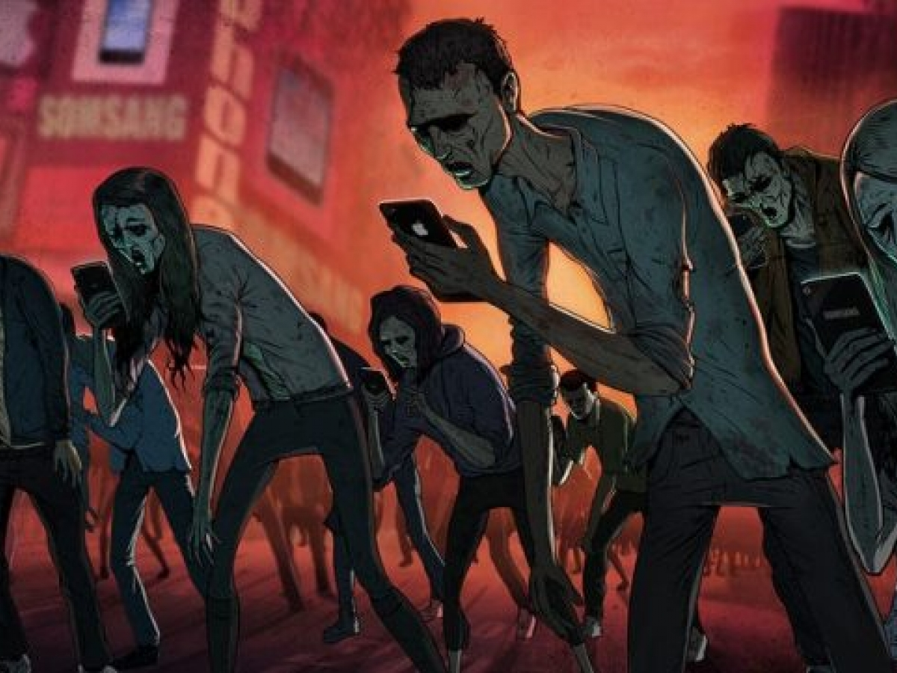
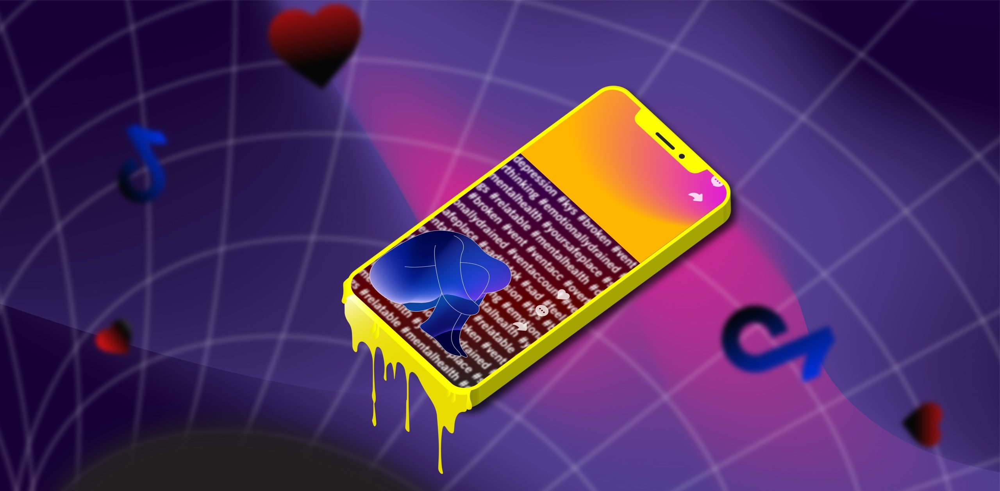

Uma reflexão sobre o presente
Uma análise crítica sobre alienação, dopamina e o esquecimento de si mesmo na era digital.
Começar a LeituraEste projeto apresenta uma reflexão crítica sobre a vida moderna e o comportamento humano na atualidade. O conteúdo aborda temas como alienação, excesso de estímulos, perda de foco e a importância do autoconhecimento, utilizando referências filosóficas.
"Você é si mesmo porque escolheu ser assim, ou é si mesmo porque não soube reconhecer?"
Hoje, a humanidade vive sua pior era: a era da alienação. Todos os dias somos expostos a estímulos dopaminérgicos extremos, mesmo que não consigamos reconhecê-los. Esses estímulos estão, nos exemplos mais clássicos, desde a comida gordurosa e ultra-processada, até a rolagem no TikTok.
Até aí, parece inofensivo — até porque esse tipo de comportamento é normalizado e os sintomas, romantizados. Alguns deles:

Sócrates, há mais de 2000 anos, já dizia: "Uma vida não examinada não vale a pena ser vivida." Esse pensamento não era apenas um incentivo às futuras gerações — era um aviso. Uma vida não refletida, questionada, que não busque o auto aperfeiçoamento, é parecida com uma vida guiada por instintos.
E se uma vida é guiada por instintos e sentimentos momentâneos, do que a diferencia da de um animal, também guiado por instintos primitivos?
O ponto de virada que permitiu a disparidade evolutiva entre humanos e animais foi a inteligência, a capacidade de pensar, o senso crítico. A inteligência, fator que nos permitiu chegar tão longe, é hoje banalizada — e essa é uma situação que pode indicar um colapso da sociedade como a conhecemos.
Doenças pioram, alterações climáticas pioram, qualidade dos alimentos piora. A geração que deveria resolver os problemas deixados pelas anteriores é a atual — mas como uma geração desfocada e intelectualmente fragilizada poderia fazê-lo?
Platão, em sua Alegoria da Caverna, especula sobre indivíduos acorrentados, olhando apenas projeções do "mundo real". Um deles descobre que não estão presos e se solta, conhecendo a verdade. Porém, quando vai contar aos outros, estes não acreditam e ameaçam até matá-lo. A analogia é clara: não é possível mudar a maioria, a não ser que ela decida mudar por si mesma.
E se a maioria é arrogante por ter se acomodado ao normalizado, então — ao menos — como você que está lendo pode mudar? O primeiro passo é o reconhecimento. Reconheça a própria arrogância, a própria falta de entendimento e a própria situação. Reconheça que o mundo é tendenciosamente mal e que corrobora para o seu declínio — e que apenas você pode mudar a si mesmo.
A sua personalidade e comportamento são moldados a partir de experiências de vivência. Reconheça a si mesmo, reconheça que consegue mudar e, então, aja. Dê ao menos uma chance à mudança.
| Hábito | Frequência | Impacto |
|---|---|---|
| Uso de redes sociais | Alto | Perda de foco |
| Leitura | Baixo | Pouco desenvolvimento |
| Exercício físico | Médio | Melhora da saúde |
